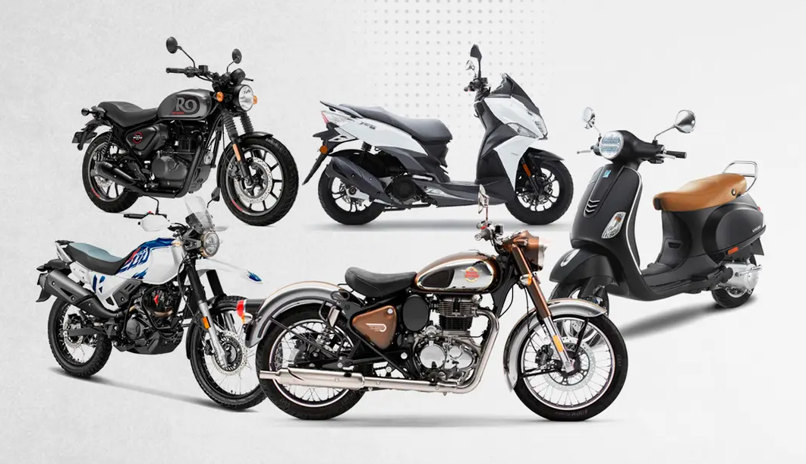
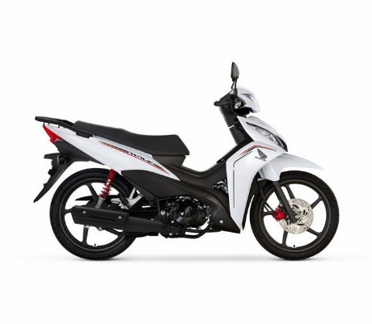
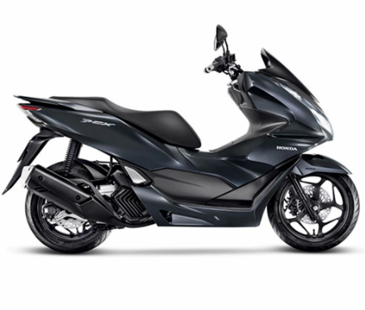
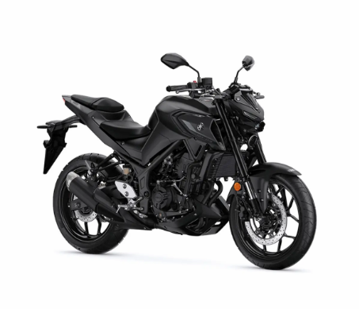
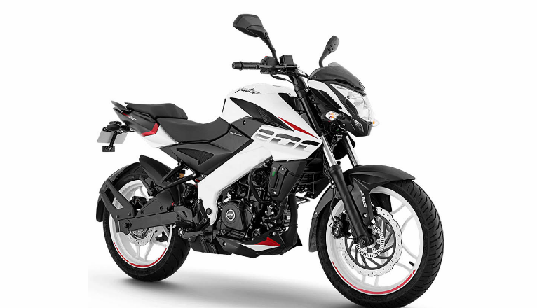

¿Qué es una moto para Ciudad?
Las motos para ciudad están pensadas principalmente para desplazarse por zonas urbanas. Son ideales para ir al trabajo, estudiar, hacer compras y realizar recorridos cortos o medianos.

¿Por qué elegir una moto para Ciudad?
Si tu principal objetivo es moverte diariamente por la ciudad, una moto urbana puede ser una alternativa económica, ágil y práctica frente a un automóvil.
Características principales
⛽ Bajo consumo. Suelen tener motores de baja o media cilindrada, lo que permite reducir el consumo de combustible.
🚦 Fácil manejo. Son motos ágiles y fáciles de maniobrar, ideales para circular entre el tránsito urbano.
💰 Mantenimiento económico. Generalmente tienen costos de mantenimiento y repuestos accesibles.
🪑 Comodidad. Están diseñadas para realizar recorridos diarios sin resultar demasiado exigentes para el conductor.
👤 ¿Para quién es recomendable?
Este tipo de moto es una buena opción para personas que buscan un vehículo práctico y económico para utilizar todos los días en la ciudad.
- 🧑💼 Personas que van al trabajo.
- 🎓 Estudiantes.
- 🛵 Personas que realizan recorridos diarios.
- 📦 Repartidores.
Ejemplos de motos para ciudad
Honda Wave 110 – Cub / Underbone - Es ideal para desplazarse diariamente por la ciudad. Su tamaño compacto facilita el manejo y el estacionamiento.

Honda PCX 160 – Scooter - Cómoda y práctica para desplazarse por la ciudad, con espacio de almacenamiento y transmisión automática.

Yamaha MT-03 – Naked - Ágil y liviana, con mayor potencia para moverse por la ciudad y también realizar recorridos por ruta.

Bajaj Pulsar NS200 – Street - Ofrece mayor potencia y prestaciones sin dejar de ser adecuada para el uso urbano.
